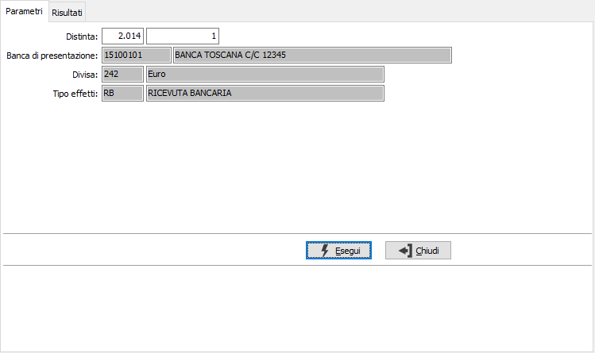
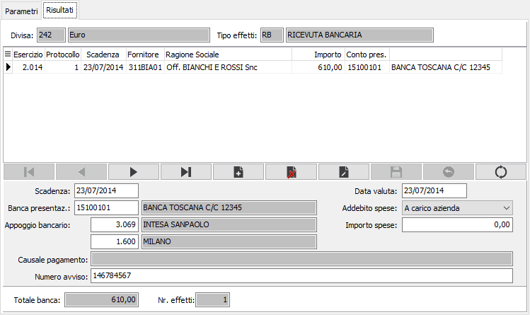

Manutenzione distinte
Il programma consente di manutenere distinte di pagamento già elaborate ma non ancora stampate in modalità definitiva. È ancora possibile, prima della stampa definitiva, eliminare un pagamento oppure modificare coordinate bancarie di un pagamento.
Il programma si articola su due finestre video: la prima consente di fornire i parametri di selezione, e la seconda, articolata sulle due sezioni ormai note, permette di manutenere i pagamenti disposti.

DISTINTA - ESERCIZIO: indicare il numero dell'esercizio in cui è stata generata la distinta da manutenere. Viene proposto il numero dell’esercizio in corso, modificabile.
DISTINTA - NUMERO: indicare il numero della distinta che si vuole manutenere. Viene proposto il numero dell’ultima distinta, modificabile.
BANCA DI PRESENTAZIONE: è il codice della banca su cui è prevista la presentazione della distinta. Viene proposta automaticamente la banca della distinta in esame.
DIVISA: è il codice della divisa relativa ai pagamenti presenti nella distinta. Viene proposta automaticamente la divisa della distinta in esame.
TIPO EFFETTO: è il codice del metodo di pagamento delle scadenze presenti nella distinta. Viene proposta automaticamente quello della distinta in esame. Sul campo è disponibile la funzione di ricerca (F9).

SCADENZA: data di scadenza del pagamento selezionato, modificabile.
BANCA DI PRESENTAZIONE: è il codice della banca su cui è prevista la presentazione della distinta, modificabile.
APPOGGIO BANCARIO - BANCA: è il codice della banca di domiciliazione del pagamento, modificabile.
APPOGGIO BANCARIO - AGENZIA: è il codice dell’agenzia della banca di domiciliazione del pagamento, modificabile.
DATA VALUTA: data valuta a favore del fornitore assegnata al pagamento selezionato.
NUMERO AVVISO: numero avviso assegnato ad ogni pagamento.